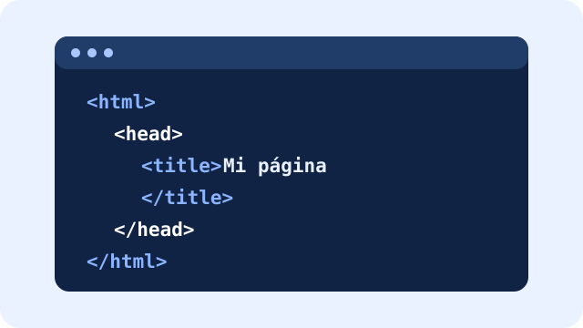

1. HTML
Organiza la estructura y el contenido de una página.
Las aplicaciones web combinan diferentes tecnologías para mostrar información y permitir que las personas interactúen con ella.

Organiza la estructura y el contenido de una página.
Define colores, tamaños, márgenes y distribución visual.

Agrega interactividad, por ejemplo, comprobar respuestas de un examen.

Es la parte visible con la que interactúa el usuario.
Procesa información y ejecuta reglas en el servidor.
Guarda y organiza información, como productos o usuarios.
Permite que diferentes programas se comuniquen e intercambien datos.
Adapta una página a pantallas de computadoras, tabletas y celulares.

Conjunto de herramientas y reglas que ayuda a organizar el desarrollo.
Proceso de planear, diseñar, programar, probar y mantener sitios y aplicaciones.
Este código crea un título y un párrafo:
<h1>Mi primera página</h1>
<p>Estoy aprendiendo aplicaciones web.</p>